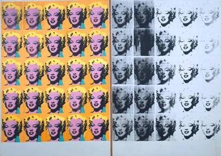

Marilyn Diptych
Andy Warhol · 1962 · Alkyd ink, acrylic paint, oil ground and graphite on two canvases · 205.4 × 144.8 cm each · Tate, London
In copyright. Look and learn: shown for study, not for download.
Warhol started making silkscreens in August 1962, the month Marilyn Monroe died, and by the end of the year had made at least twenty-three paintings of her from one publicity still for the 1953 film Niagara. He made the two panels as separate works. When Burton and Emily Tremaine visited his Lexington Avenue studio that year, before he had a dealer, she suggested showing them side by side, and they bought both. The Tremaines sold it to the Tate in 1980 for $270,000.